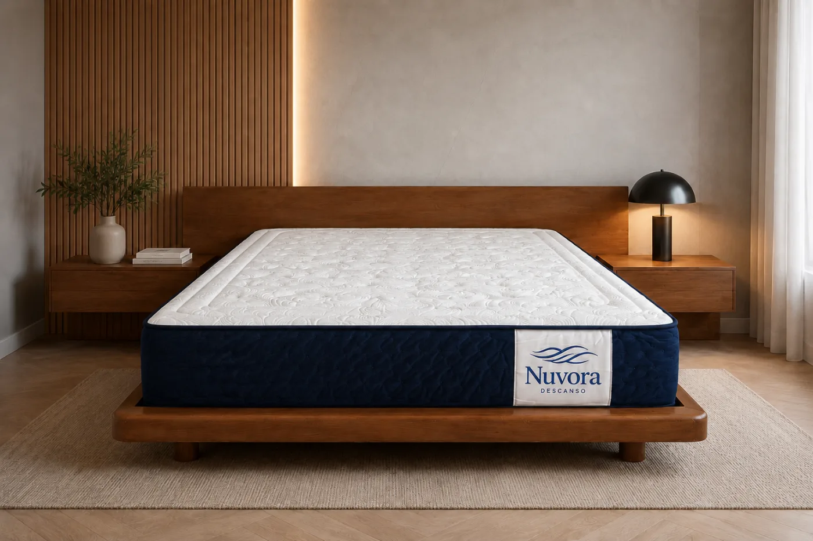
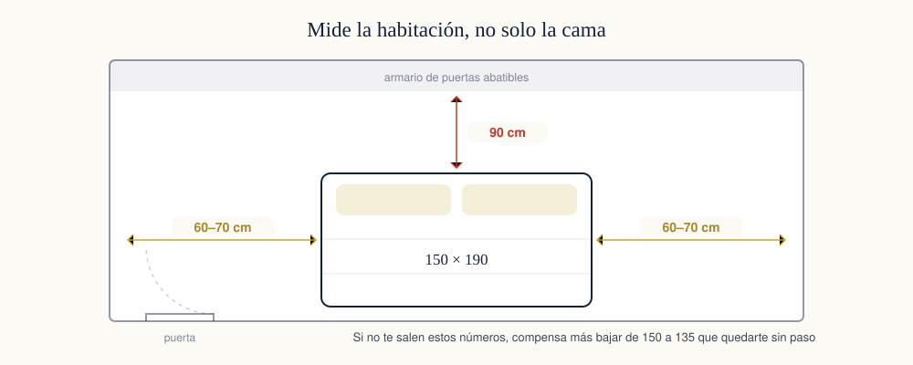
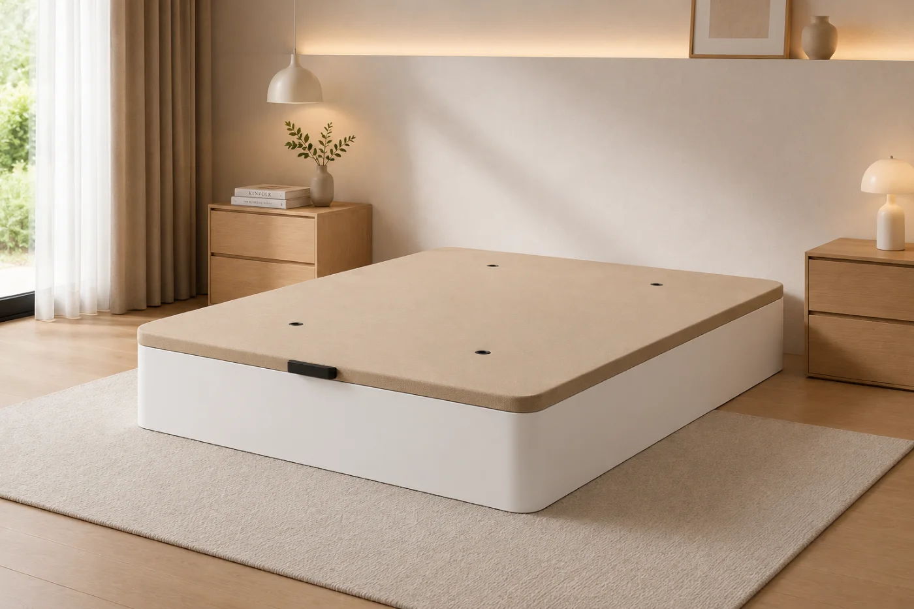

De todos los errores que se cometen comprando un colchón, el de la medida es el único que no tiene arreglo. La firmeza se compensa con un topper, el calor con una funda, pero un colchón que no encaja en la cama —o en el que no cabes— no hay nada que lo salve. Y es un error mucho más común de lo que parece, porque en España conviven dos formas de nombrar las medidas y casi nadie mide bien la habitación.
Esta guía tiene las medidas que de verdad se fabrican, el nombre con el que las vas a encontrar en cada tienda y una regla sencilla para el largo y otra para el ancho. Al final sabrás exactamente qué pedir.
La tabla completa de medidas
En España el colchón se nombra por su ancho en centímetros: cuando alguien dice «una cama de 135» está hablando de 135 cm de ancho. El largo va aparte y casi siempre es 190 o 200 cm. Esta es la correspondencia entre cada ancho, su nombre comercial y a quién le encaja:
| Ancho | Cómo se llama | Para quién |
|---|---|---|
| 75 cm | Individual estrecha | Camas nido, literas y habitaciones muy justas |
| 80 cm | Individual | Camas articuladas y dormitorios juveniles |
| 90 cm | Individual estándar | La medida individual más vendida en España |
| 105 cm | Tres cuartos | Una persona que quiere sitio de sobra |
| 110 cm | Individual grande | Adolescentes y habitaciones de invitados |
| 120 cm | Matrimonio pequeño | Pareja ocasional o una persona con perro |
| 135 cm | Matrimonio | La clásica española: pareja en dormitorio estándar |
| 140 cm | Matrimonio europeo | Equivale a la «double» francesa e italiana |
| 150 cm | Matrimonio grande | Pareja con espacio real: la más recomendable hoy |
| 160 cm | Queen | Pareja que se mueve, o que duerme con niños a ratos |
| 180 cm | King | Dormitorio principal amplio |
| 200 cm | Super king | Dos colchones de 100 juntos o uno de 2 metros |
Cada uno de estos anchos se fabrica en 190 y en 200 cm de largo. De ahí salen las 24 medidas de nuestro catálogo: no son variantes de marketing, son las combinaciones que realmente se usan en las casas españolas.
Cómo elegir el ancho
Hay una prueba que se hace en dos segundos y explica mejor que cualquier tabla si tu cama se te ha quedado pequeña. Túmbate boca arriba con las manos entrelazadas detrás de la cabeza y separa los codos. Si tocas a tu pareja, o te sales del colchón, vas justo.
Si duermes solo
Con 90 cm se duerme perfectamente. Los 105 y 110 no son un capricho: si eres de dar vueltas, si mides más de 1,85 m o si compartes la cama con un animal, se notan mucho. Por debajo de 90 solo tiene sentido en literas, camas nido o habitaciones donde no cabe otra cosa.
Si dormís dos
Aquí está el error más repetido de todos. En una cama de 135, a cada persona le tocan 67,5 cm: menos de lo que mide una cuna de viaje. En una de 150, 75 cm cada uno. En una de 160, 80 cm, que es exactamente el ancho de una cama individual entera para cada uno.
Si tienes sitio, los 15 cm que van de 135 a 150 son la mejora más barata que puedes hacerle a tu descanso. Cuestan poco más y se notan todas las noches, sobre todo si uno de los dos se mueve.

Todas las medidas Colchones Nuvora El mismo colchón en 24 medidas, de la 75 × 190 a la 200 × 200. El precio sube solo lo que sube el material: sin recargos por «medida especial». Desde205,34 € Comparar los tres modelos → Envío gratis30 noches de prueba5 años de garantía24 medidasCómo elegir el largo
La regla es sencilla: tu altura más 15 o 20 cm. Ese margen no es capricho, es el sitio que necesitan los pies y la almohada.
La cuenta rápida del largo
- Hasta 1,70 m de altura: 190 cm de largo va sobrado.
- Entre 1,70 y 1,80 m: 190 cm sirve, pero en 200 se duerme mejor.
- Más de 1,80 m: 200 cm, sin dudarlo.
- En pareja manda el más alto de los dos.
Dormir en un colchón corto no se nota como incomodidad, se nota como manía: acabas durmiendo en diagonal, o con los pies colgando, o encogido. Y encoger las piernas toda la noche tensa la zona lumbar.

Mide la habitación, no solo la cama
Antes de decidir el ancho, coge un metro y comprueba el hueco. Necesitas:
- 60–70 cm de paso por cada lado que se use para entrar y salir.
- 90 cm si delante hay un armario de puertas abatibles, para poder abrirlas del todo.
- Espacio para que la puerta de la habitación abra sin tocar la cama.
Y si vas a poner canapé, mide también la altura libre por delante: un canapé abatible necesita levantar la tapa entera, así que no puede haber una ventana baja, un radiador o una estantería justo enfrente.
El colchón y la base tienen que medir lo mismo
Cuando un canapé o un somier se anuncia como «de 150 × 190», esa es la medida del colchón que admite, no la del mueble por fuera. El contorno exterior mide unos 4 a 6 cm más por cada lado.
De ahí sale una confusión cara: alguien mide su canapé por fuera, le salen 156 cm, y pide un colchón de 160. El colchón llega y sobresale por los lados. Mide siempre el hueco interior donde apoya el colchón, o mira la etiqueta del canapé.
Y no mezcles largos: un colchón de 190 sobre una base de 200 deja diez centímetros de base al aire, el colchón se desplaza cada noche y el borde acaba cediendo antes de tiempo.

Fabricado por nosotros Canapé abatible Nuvora Se fabrica en las mismas 30 medidas, de la 90 × 180 a la 200 × 200, para que colchón y base encajen al milímetro. Desde300 € Ver los canapés →Cómo medir tu colchón actual sin equivocarte
Si vas a sustituir uno que ya tienes y quieres la misma medida, hazlo así:
- Quita las sábanas y el protector. Un protector acolchado puede sumar dos centímetros falsos.
- Mide de costura a costura, por el centro del colchón, no por las esquinas: las esquinas se redondean con el uso.
- Redondea al número comercial más cercano. Si te salen 134 cm, tu colchón es de 135; si te salen 148, es de 150. Los colchones pierden un poco de medida con los años.
- Comprueba también el grosor, sobre todo si usas sábanas ajustables: un colchón de 30 cm no entra en una sábana pensada para 20.
En resumen
El ancho lo decide cuánta gente duerme y cuánto sitio hay en la habitación; el largo lo decide la altura del más alto. Si dudas entre dos anchos y el hueco te lo permite, coge el mayor: nadie se ha arrepentido nunca de tener más cama, y sí mucha gente de tenerla justa.
Cuando tengas clara la medida, lo siguiente es la firmeza. Lo tienes desarrollado en la guía de firmeza según tu peso y tu postura, y si aún dudas entre tecnologías, en la comparativa de viscoelástico y muelles ensacados.
La medida es solo la mitad del asunto de la base: el tipo también manda. Lo tienes en canapé, somier o base tapizada.
Preguntas frecuentes
¿Cuál es la medida de colchón más habitual en España?
La de 135 × 190 cm, que en las tiendas se llama simplemente «matrimonio», es la más vendida históricamente porque encaja en los dormitorios de los pisos construidos entre los años sesenta y noventa. En obra nueva y en reformas se ha impuesto la de 150 × 190 cm, que da 7,5 cm más de ancho a cada persona.
¿Qué largo de colchón necesito según mi altura?
La regla práctica es tu altura más 15 o 20 cm. Alguien de 1,70 m está cómodo en 190 cm de largo; a partir de 1,80 m conviene ir a 200 cm, porque en 190 acabas durmiendo con los pies en el borde o en diagonal.
¿Un colchón de 150 cabe en un canapé de 150?
Sí: la medida que se anuncia en un canapé es la del colchón que admite, no la del mueble por fuera. Un canapé de 150 × 190 mide por fuera unos 4 o 6 cm más en cada dimensión. Lo que tienes que comprobar es que ese contorno exterior cabe en tu habitación con la puerta abierta.
¿Puedo poner un colchón de 150 × 190 en una base de 150 × 200?
Puedes, pero quedan 10 cm de base al aire por los pies y el colchón tiende a desplazarse. Siempre que sea posible, colchón y base deben tener exactamente la misma medida en las dos dimensiones.
¿Cuánto espacio hay que dejar alrededor de la cama?
Entre 60 y 70 cm por cada lado que se use para pasar, y unos 90 cm si delante hay un armario con puertas abatibles. Si al medir no te salen esos números, compensa más bajar de 150 a 135 que quedarte sin paso.
Todas las medidas, el mismo colchón
Fabricamos cada modelo en 24 medidas, de la 75 × 190 a la 200 × 200. Envío gratuito, 30 noches de prueba y 5 años de garantía.
Ver colchones